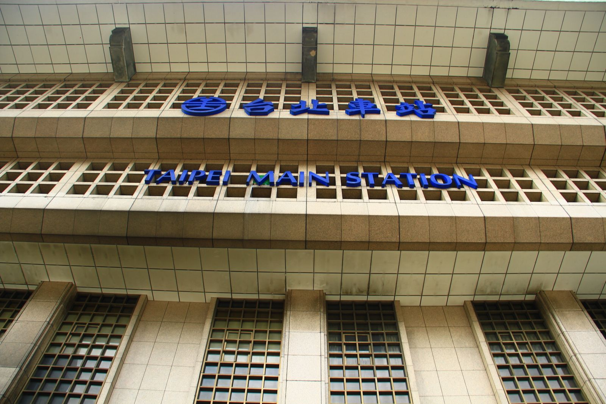
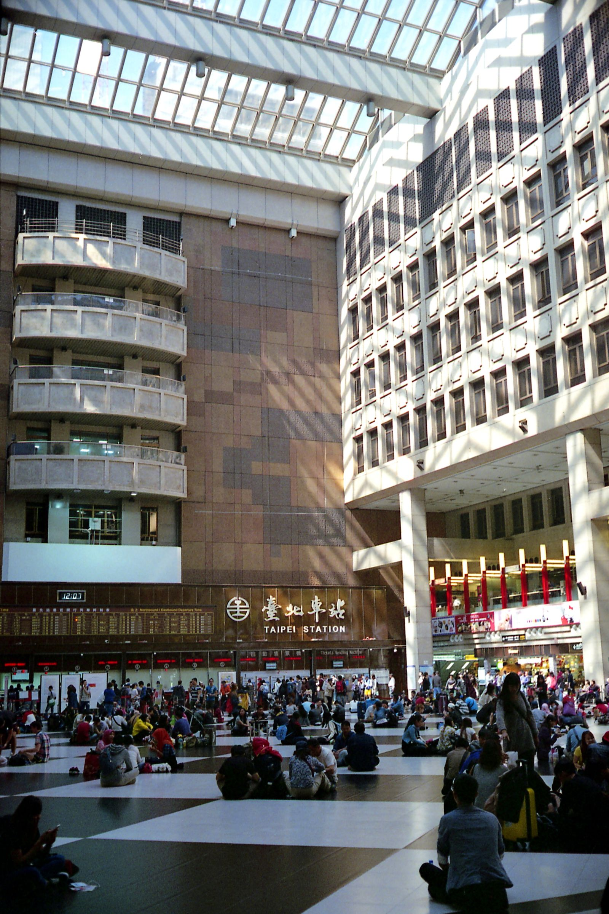

타이베이역 짐 보관, 캐리어 맡기면 하루 얼마일까?
체크아웃은 끝났는데 기차나 비행기까지 시간이 남았다면 — 역에 짐을 맡기고 가볍게 움직이는 방법이 있어요.
게시
"캐리어를 끌고 마지막 날을 보내야 할까요?" 타이베이역 짐 보관은 대만철도(臺鐵) 수하물 보관소(行李房)에 맡기는 방법과 역 안 무인 보관함을 쓰는 방법 두 가지가 있습니다. 대만철도 공식 안내와 요금표(2026년 10월 기준)를 바탕으로 정리해봤어요.
01 · 한눈에 비교하기
| 구분 | 수하물 보관소(行李房) | 무인 보관함 |
|---|---|---|
| 요금 기준 | 1개·1일 | 3시간마다 |
| 요금(2026년 10월 기준) | NT$30·50·70 | NT$40~110 |
| 이용 시간 | 08:00~20:00 | 역 영업시간 동안 |
| 이럴 때 | 큰 캐리어, 하루 이상 | 몇 시간만 짧게 |
대만철도 안내(2026년 10월 7일 갱신)에서 임시 보관을 멈춘 역은 신주·톈중·얼수이·민슝 네 곳뿐이고, 타이베이역은 여기에 들어가지 않습니다.
02 · 수하물 보관소 요금 계산법
세 변을 더하기 가로+세로+높이 합으로 요금이 정해져요. 100cm 이하 NT$30, 101~150cm NT$50, 151cm 이상 NT$70이고 1개·1일 기준, 세금 포함입니다.
기내용 캐리어도 확인 흔히 쓰는 기내용 규격 55×40×23cm만 해도 합이 118cm라 NT$50 구간이에요.
둥근 짐은 따로 둥근 물건은 '지름×2+높이'로 재고, 모양이 불규칙하면 역에서 판단합니다.
유모차·자전거 유모차, 자전거, 접이식 휠체어는 1대·1일 NT$50이에요.
오래 맡길 때 10일을 넘기면 11일째부터 요금이 두 배가 되고, 최장 6개월까지 맡길 수 있습니다.

03 · 맡기기 전에 확인할 것
찾는 시간 대만철도 연락처 표(2026년 10월 6일판) 기준 타이베이역 수하물 보관소는 08:00~20:00 운영합니다. 늦게 찾을 예정이면 (02)2314-1223으로 미리 전화해보세요.
맡길 수 없는 짐 위험물과 귀중품, 포장이 허술하거나 너무 큰 물건, 상하기 쉬운 음식, 냄새 나는 물건, 동물은 받지 않아요.
짐이 여러 개면 요금은 짐마다 크기별로 따로 붙어요. 작은 가방과 큰 캐리어를 함께 맡기면 각각 더해서 계산하면 됩니다.
위치 묻기 역 안내데스크에서 '行李房(싱리팡)'이라고 보여주면 길을 알려줘요.
현장 공지 우선 요금표는 공식 기준이지만 실제 운영은 역 공지가 우선이에요.
04 · 몇 시간만이라면 무인 보관함
대만철도 자동 보관함 안내(2026년 7월 29일 갱신) 기준 타이베이역 보관함은 크기에 따라 7가지이고, 3시간마다 NT$40~110이 붙는 터치스크린 방식입니다. 역 영업시간 동안 쓸 수 있고, 실제 요금은 현장 기계 안내가 기준이에요. 같은 보관함이 반차오·쑹산 등 54개 역에 있어서 다른 역에서 짐을 맡기는 것도 방법입니다.

"크고 오래면 수하물 보관소, 짧으면 보관함." — 대만철도 공식 요금표를 바탕으로 정리한 한 줄 요약입니다.
마지막 날 동선은 타이베이 마지막 날 오후 비행기 코스, 근교로 나간다면 예류 지우펀 버스 글도 함께 보세요. 짐을 맡긴 뒤에는 타이베이 맛집 지도의 타이베이 조식 맛집이나 역에서 가까운 베이먼 쪽 粥大福 중정 베이먼점에 들러보세요.
지도에서 타이베이 조식 맛집을 찾아보세요
짐을 맡기고 가볍게 들르기 좋은 타이베이 아침 맛집을 지도에서 확인해보세요.